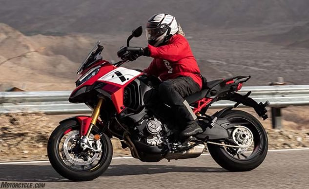
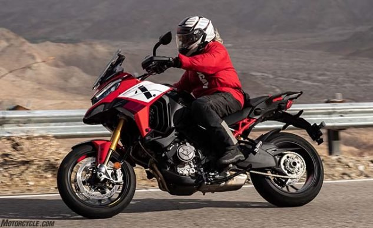

VEHICLES

 


A vehicle is any machine that transports people, animals (live cargo), or cargo. Examples of these include: cars, trucks, buses, wagons, motorbikes, bicycles, boats, airplanes, and spacecraft. Vehicles that do not travel on land often are called craft, such as watercraft, sailcraft, aircraft, hovercraft, and spacecraft. Land vehicles are classified broadly by what is used to apply steering and drive forces against the ground: wheeled, tracked, railed or skied.
Why are Vehicles amazing?
Vehicles made changes in industry and technology, and everyday life. It gave peolpe more personal freedom and access to jobs and services, and even led to the development of better roads and transportation. Automobiles also developed a supply of demand for automobile parts and fuel (such as gasoline, rubber, petroleum, and many more). These made way for people to have more access to jobs, places to live and services. Vehicles also contributed to the rise of leisure activities, which affected hotels, amusement parks, restaurants, and much more.
The main purpose for the creation of vehicles is that is helped people get around more quickly, whether through air, land, or water. These different modes of transportation shortened the time travelling long distances and even saved lives in terms of medical purpose. Vehicles are not human's basic need but becomes very essential nowadays in our modern world. For example, being able to transport heavy loads from one destination to another can lessen manual labor.